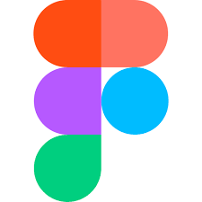

Vincent
gueneuc
Etudiant en Bachelor Universitaire de Technologie Informatique
Etudiant de 18 ans, je suis en première année de BUT Informatique à l'IUT de Lannion. Ceci est ma page personelle, vous y trouverez les formations que j'ai obtenues, mes compétences acquises, les langages que je maîtrise, mes projets informatiques réalisés, mon expérience professionelle ainsi que mes centres d'intérêt. Pendant ma 2e et 3e année de BUT, je suivrai le parcours "Réalisation d'applications : conception, développement, validation" car c'est celui qui correspond le mieux à mon projet professionel, à savoir le développement d'applications et d'algorithmes. J'ai pour projet, après mon BUT, d'intégrer un Master dans le domaine de l'informatique et du développement d'applications.
Mes formations
- 2021 : Baccalauréat Général(mention bien), spécialités Numérique et Sciences Informatiques et Mathématiques - Lycée Général et Technologique Maupertuis à Saint-Malo(35)
- 2021-2022 : 1ère année de BUT Informatique - Institut Universitaire de Technologie de Lannion(22)
Mes competences
- Rigueur
- Organisation
- Développer des applications avec une gestion des données
- Conduire un projet en équipe
- Niveau d'anglais B2
- Niveau d'espagnol B1
- Apprentisage du japonais en autodidacte
- Maîtrise des logiciels suivants :
 Visual Studio Code pour l'écriture de programmes
Visual Studio Code pour l'écriture de programmes GitHub ou Teams pour des projets de groupe
GitHub ou Teams pour des projets de groupe Trello pour de la gestion de projet
Trello pour de la gestion de projet- MySQLWorkbench pour la gestion de base de données
- Cisco Packet Tracer pour de la simulation réseau
-  Figma pour du maquettage
Langages maitrises
 C :⭐⭐⭐⭐⭐
C :⭐⭐⭐⭐⭐ Java :⭐⭐⭐⭐
Java :⭐⭐⭐⭐ Python :⭐⭐⭐⭐⭐
Python :⭐⭐⭐⭐⭐ HTML :⭐⭐⭐
HTML :⭐⭐⭐- CSS :⭐⭐
- SQl/Tutorial D :⭐⭐⭐
 PHP/Bash :⭐⭐⭐
PHP/Bash :⭐⭐⭐
Mes Projets
Application Morpion
Il s'agit d'un projet que j'ai réalisé en autonomie. C'est une application en C de simulation du jeu de Morpion contre un autre joueur et un ordinateur. Un système de classement des 10 meilleurs joueurs au cours de l'exécution de l'application est également mis en place.
Compétences acquises :
Autonomie, Implémentation informatique d'un jeu, Analyser les fonctionnalités et les séparer en divers algorithmes, conception et implémentation d'application.
Site Web Koh Frais
Il s'agit d'un projet que j'ai réalisé en équipe. Nous avons réalisé un site web basé sur une charte graphique et un maquettage tous deux réalisés à partir d'une interview d'un client. Nous avons également fait une analyse de besoins en premier lieu. Pour le développement, nous avons utilisé le framework Bootstrap, ainsi que les langages HTML, CSS et JavaScript.
Compétences acquises :
Analyse d'un texte pour en formuler divers besoins client, répartition des tâches, communication au sein d'une équipe, mutualisation des travaux, utilisation d'un outil de gestion de projet, utilisation d'un framework.
Probleme des 8 Reines
Il s'agit d'un projet que j'ai réalisé en équipe. Nous avons conçu un programme en Python qui ressort un échiquier qui est ou pas une solution au problème des Huit Reines (pour en savoir plus cliquez ici) à partir d'une dimension d'échiquier que l'utilisateur entre. Divers messages sont également affichés pour comprendre l'avancement du programme. Nous avons implémenté la notion de Graphes pour la gestion des Dames.
Compétences acquises :
Conception d'algorithme pour résoudre un problème mathématique, implémentation d'outils mathématiques, séparer un problème en sous-problèmes résolvables par différentes algorithmes, mutualisation des travaux.
Mon parcours professionel
- Juillet 2020 et 2021: poste saisonnier en exploitation agricole dans la EARL Lesne Cadiou à St-Méloir(35), plantation de poireaux.
Exprérience retenue : Travailler en équipe, garder un rythme de travail. - Avril 2022: Préparation/livraison de commandes du Leclerc Drive à St-Malo(35).
Exprérience retenue : Contact avec le client, acquisition de différentes procédures et consignes, polyvalence, communication en équipe.
Mes centres d'interet
 Basket-Ball
Basket-Ball- Cinéma
 Jeux-Vidéo
Jeux-Vidéo